Un parque de caravanas apiladas en vertical, inspirado en "The Stacks" de Ready Player One. Pobre pero tecnológico: chapa reciclada, pasarelas de rejilla, paneles solares, aires acondicionados y parabólicas.
Todo se genera con un sistema procedural en Houdini, controlado por sliders, desde la forma de cada caravana hasta la distribución de las torres.
Houdini 22SOPs proceduralesInstancias packedKarmaConstruido con Claude vía MCP
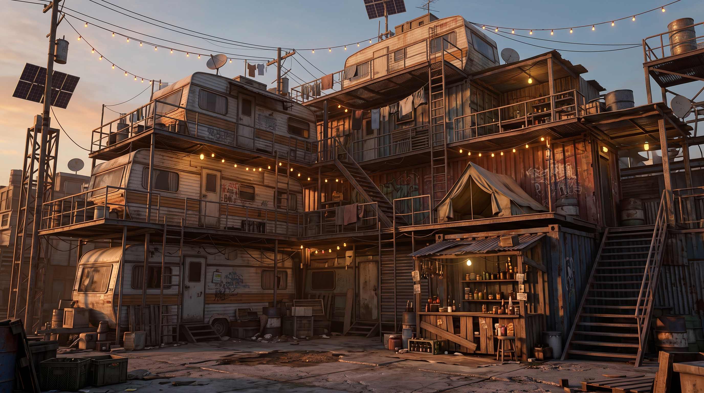
1bFase actual
8 / 8Tipos de caravana
172Sliders creados
≈160Unidades objetivo
Hoja de ruta
0SetupHecha
1aGeneradores de caravanaHecha · 8 tipos, 32 subvariantes
1bResto del kitEn curso · falta clutter y poste
2Layout y apiladoPendiente
3Estructura metálicaPendiente
4Circulación y accesosPendiente
5Equipamiento, clutter y cablesPendiente
6HDA e interfazPendiente
7Lookdev y luzPendiente
8Desgaste y detalle finoPendiente
9Visualizador proceduralPendiente
10CinemáticaPendiente
Referencias
Escala humana, atardecer
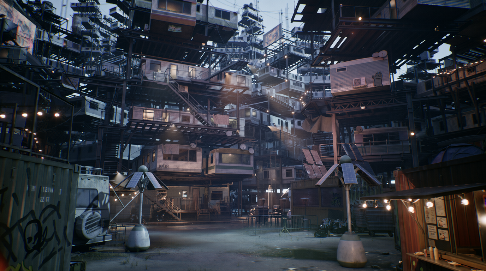
Torres densas y plaza
Avances
Fase 1b · circulación · kit21 oct 2026
Un kit de pasarelas con esquinas
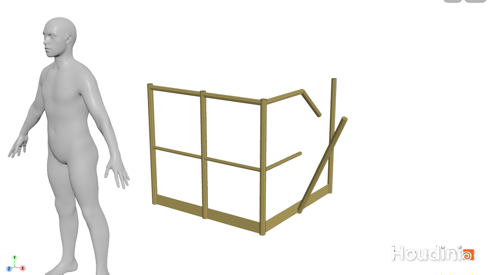
Barandilla en L, rota: un solo poste en la esquina
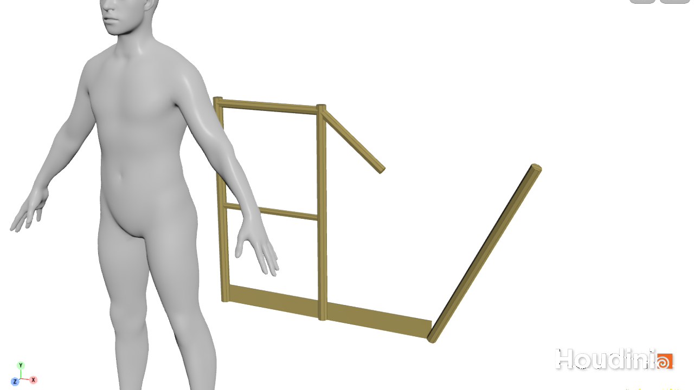
Barandilla de cruce en T, rota
Las barandillas tienen que seguir cómo se coloquen las caravanas, así que la circulación pasa a ser un kit que encaja en la rejilla. Hay casillas de pasarela rectas y de esquina o cruce, y barandillas rectas, en L, de cruce en T y de remate para los extremos que dan al vacío, cada una intacta o rota. Todas comparten el mismo marco de referencia: el lado exterior de la casilla siempre es el mismo, así que al montar las torres basta con colocar la casilla y su barandilla con el mismo giro.
Nota técnicaLa barandilla ya no es un tramo fijo: es una línea de lados que se remuestrea en tramos iguales. Los postes salen en cada punto y se fusionan en la esquina, para que haya uno solo. Los pasamanos son un PolyWire sobre cada tramo y el rodapié un Sweep que dobla la esquina. La rotura elige con la semilla un tramo y un poste de esa misma línea, así que la L rota queda tan coherente como la recta.
Las piezas para moverse por las torres salen de un mismo generador: tramos de pasarela de rejilla del tamaño de una celda, barandillas de tubo, escaleras metálicas que salvan un piso entero y escaleras de mano verticales. Las barandillas pueden estar intactas o rotas: falta un tramo, cuelga un trozo de pasamanos y hay un poste doblado, y todo cambia con una semilla. Todas las piezas comparten una regla: la cota cero es la superficie de pisar, así que encajan en los forjados sin cálculos.
Nota técnicaLa escalera se dimensiona sola: a partir de la altura a salvar calcula el número de contrahuellas para que midan unos 18 cm, y con una huella de 25 cm salen el desarrollo y el ángulo de las zancas. La barandilla rota no es un modelo aparte: dos expresiones de grupo eligen, con la semilla, qué poste se dobla y qué tramo se cae, sobre los mismos puntos que construyen la barandilla intacta.
+18 sliders4 piezas + estado rotode 48 a 210 polígonos
Fase 1b · equipamiento · cierre21 oct 2026
Dieciséis piezas de equipamiento
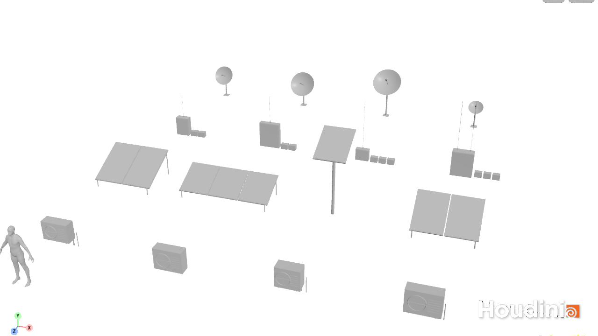
Una fila por tipo: aire acondicionado, solar, caja tech y parabólica
El equipamiento se hornea como el resto: cuatro versiones de cada tipo, con distinto tamaño y montaje. Hay aires acondicionados con y sin escuadras, paneles en filas de uno a tres o en lo alto de un mástil, armarios de electrónica con más o menos antenas y baterías, y parabólicas de medio metro a más de uno. La biblioteca suma ya 78 piezas listas para instanciar.
Nota técnicaEl azar no siempre reparte bien: con la semilla de partida, ningún panel salió en mástil y el pool perdía ese montaje. La solución es mezclar azar y reglas: la tercera versión del panel solar siempre va en mástil y las demás lo deciden con una probabilidad baja. Así el pool tiene variedad garantizada sin dejar de ser determinista.
+2 sliders16 subvariantes64 KB en disco78 piezas en la biblioteca
Fase 1b · equipamiento21 oct 2026
Lo tecnológico: aire acondicionado, solares, electrónica y parabólicas
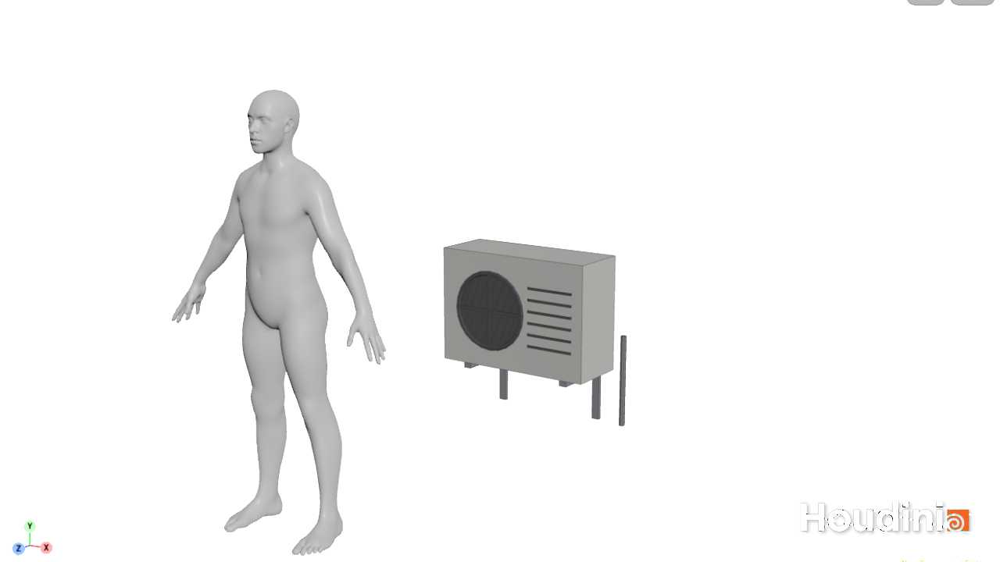
Aire acondicionado con escuadras de pared
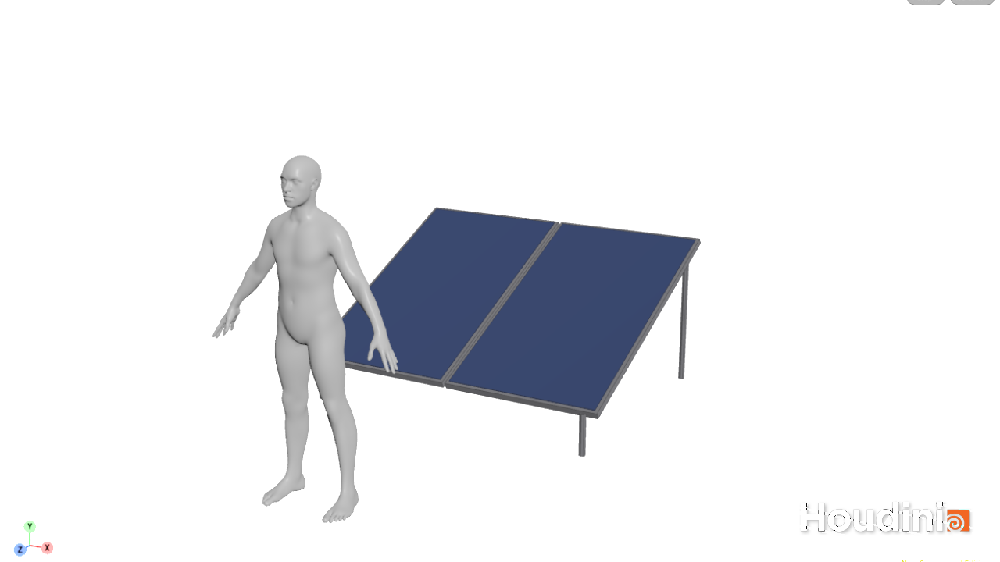
Paneles solares sobre bastidor
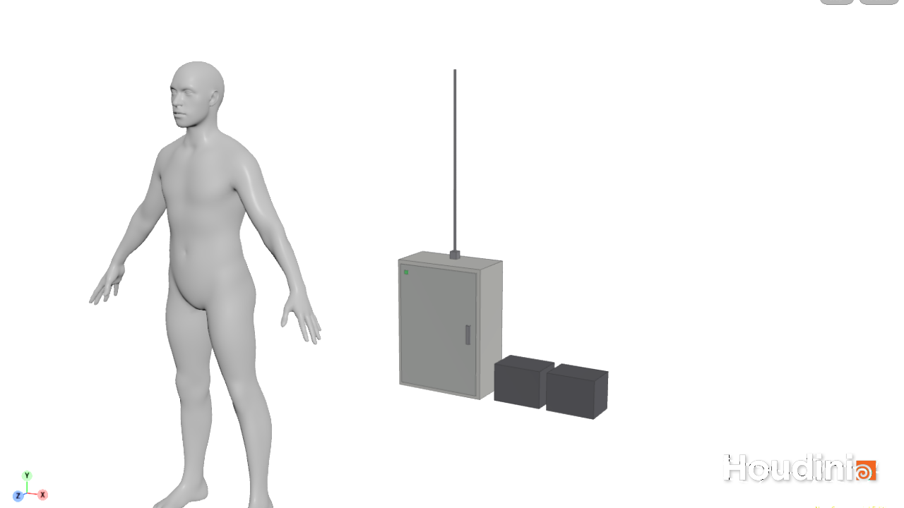
Caja tech: armario, antena y baterías
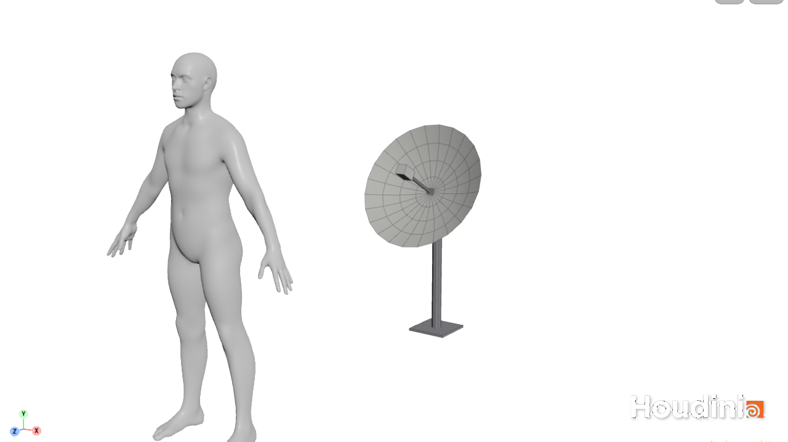
Parabólica con perfil parabólico real
El "pobre pero tecnológico" del parque sale de cuatro piezas, todas en el mismo generador: la unidad exterior de un aire acondicionado, con su ventilador, sus lamas y sus escuadras; paneles solares en fila sobre bastidor o en lo alto de un mástil; un armario de electrónica con antenas de varilla, un LED de estado y baterías en el suelo; y una antena parabólica que se puede orientar. Todas comparten una convención de montaje: las de fachada tienen la pared en un plano fijo y las de techo apoyan en el suelo, así que más adelante bastará con alinearlas con los anclajes de cada caravana.
Nota técnicaLa parabólica es una parábola de verdad: cinco puntos con y = r² / 4f, girados con Revolve, y el cabezal colocado exactamente en el foco. Los paneles solares calculan la altura de cada pata con el seno y el coseno de la inclinación, así que el bastidor siempre toca el panel aunque cambie el ángulo. Al construir el bloque se escaparon dos nodos sin entrada; solo dieron error al mostrar su rama, así que ahora cada generador se prueba rama por rama.
+21 sliders4 tiposde 80 a 282 polígonos
Fase 1b · contenedor · cierre21 oct 2026
Dieciocho contenedores en la biblioteca
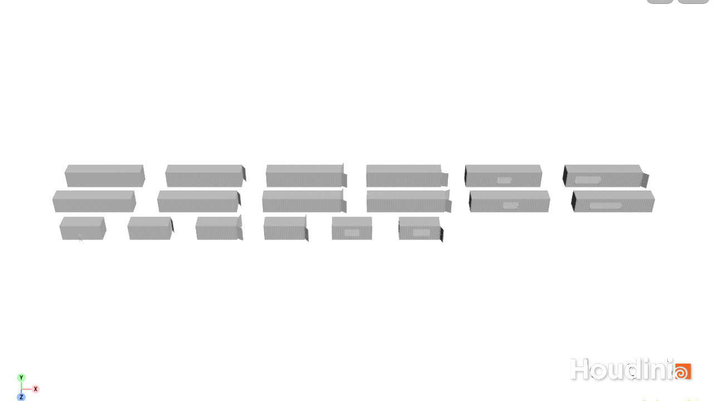
Filas: 20, 40 y 40 pies high cube. Columnas: almacén, abierto y kiosco, dos de cada
El contenedor queda cerrado como asset: un botón cruza los tres tamaños con las tres variantes y hornea dos versiones de cada combinación. La segunda versión nunca repite la primera: el almacén deja una puerta entornada, el abierto cambia los ángulos de las hojas y el kiosco mueve y redimensiona la ventana. Son 18 piezas empaquetadas en la biblioteca, que ya suma 62 entre caravanas, puestos y contenedores.
Nota técnicaEl índice que acompaña al pool guarda el tamaño real de cada pieza, no el nominal: un contenedor de 2,44 m de ancho ocupa 4,3 m con las puertas abiertas y 3,4 m con el mostrador del kiosco. El apilado y la plaza leerán ese tamaño para no meter un contenedor abierto donde solo cabe uno cerrado. Además, el horneado respeta las expresiones del generador: largo y alto siguen saliendo del menú de tamaño después de hornear.
+2 sliders18 subvarianteshorneado en 0,14 s240 KB en disco
Fase 1b · contenedor21 oct 2026
Tres maneras de usar un contenedor
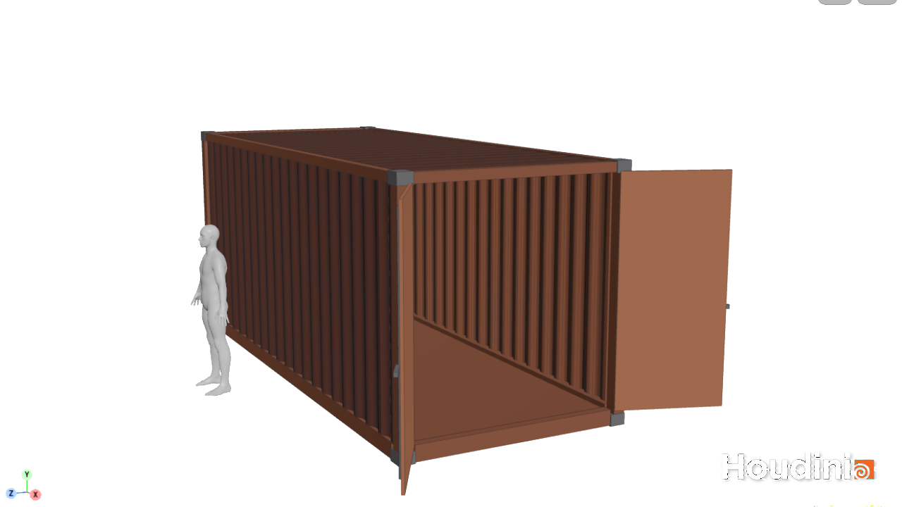
Variante Abierto: puertas abiertas e interior a la vista
El contenedor tiene ya tres variantes con nombre, elegibles desde un menú: Almacén, cerrado; Abierto, con las dos puertas de par en par; y Kiosco, con la ventana recortada, el portón y el mostrador. Cada variante solo cambia las aperturas, así que se combina con cualquier tamaño: 20 o 40 pies, estándar o high cube.
Nota técnicaEl menú no tiene geometría propia: escribe un puñado de sliders que ya existían y después se pueden retocar a mano. Es el mismo patrón de presets que las caravanas y los puestos, y será el que use el horneado del pool para cruzar variantes y tamaños.
+1 slider3 variantes × 4 tamaños
Fase 1b · contenedor abierto21 oct 2026
El contenedor se abre: puertas y kiosco
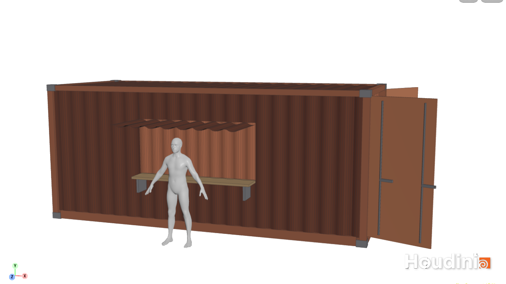
Kiosco: hueco recortado, portón de chapa como tejadillo y mostrador
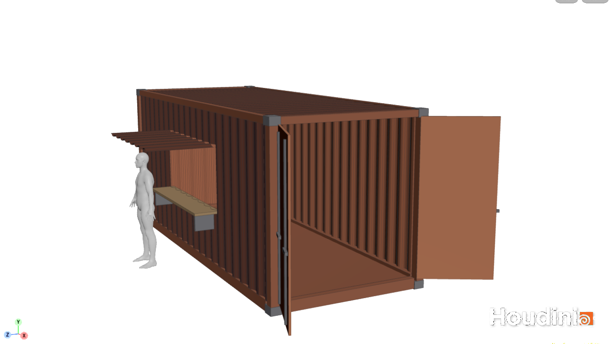
Puertas abiertas, cada una con su ángulo
El contenedor deja de ser solo almacén. Cada hoja de puerta gira sobre su bisagra con su propio ángulo, con las barras de cierre incluidas, y deja ver el interior. En el lateral se puede recortar un hueco rectangular de tamaño y posición libres: la chapa que se recorta se convierte en un portón abatible que hace de tejadillo, y debajo aparece un mostrador de madera sobre escuadras. Es el kiosco clásico hecho con un contenedor, perfecto para la plaza.
Nota técnicaEl hueco se abre con un Boolean que trata la chapa como superficie abierta y no como sólido, así que corta limpio sin cerrar nada. El portón no es el trozo cortado sino una rejilla nueva del tamaño del hueco, pero como la greca se calcula con la posición en el contenedor, sale exactamente en fase con el lateral: con el portón cerrado, el hueco desaparece sin dejar costura. Con todas las aperturas a cero, el contenedor es idéntico al de almacén, polígono a polígono.
+9 slidersabierto: 975 polígonoscerrado: 829, sin cambios
Fase 1b · contenedor21 oct 2026
Contenedor marítimo de 20 y 40 pies
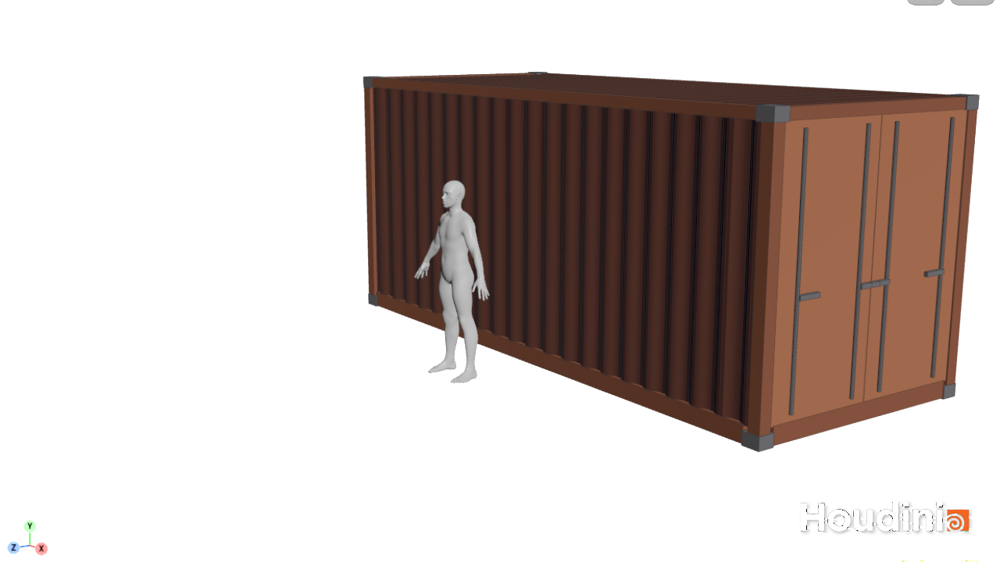
20 pies estándar, puertas con barras de cierre
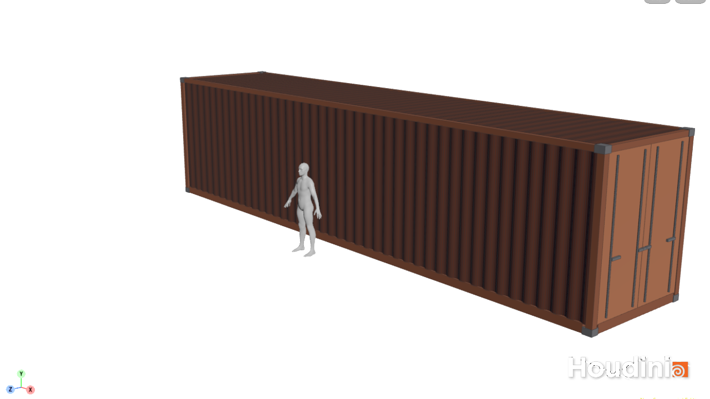
40 pies high cube con el mismo generador
El contenedor es un generador con medidas ISO reales: un menú cambia entre 20 y 40 pies y un interruptor lo convierte en high cube. Tiene chapa grecada en laterales, testero y techo, bastidor con postes y carriles, cantoneras en las ocho esquinas y dos puertas con sus barras de cierre. Como el resto del kit, publica anclajes en el techo, en los laterales y delante de las puertas.
Nota técnicaLa greca trapezoidal sale de una sola expresión: un seno multiplicado y recortado con clamp, que aplana crestas y valles. Las mismas tres rejillas sirven para laterales, testero y techo, giradas para que su normal mire hacia fuera. Para evitar parpadeos en el render, cada capa entra unos milímetros respecto a la anterior: las cantoneras marcan el borde exterior, los postes entran 5 mm, los carriles 1 cm y la chapa algo más. Así nunca hay dos caras en el mismo plano.
+8 sliders20': 829 polígonos40' HC: 1.354 polígonos6,06 / 12,19 m
Fase 1b · bloque 321 oct 2026
Doce puestos listos para la plaza
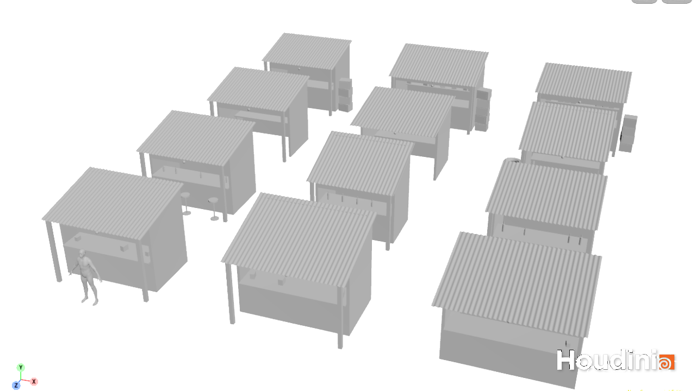
Una fila por oficio (tienda, bar, taller, electrónica) y tres subvariantes por fila
Los puestos siguen el mismo camino que las caravanas: un botón recorre los cuatro oficios y hornea tres versiones de cada uno. Cada versión cambia el ancho, el fondo, la altura, el dintel y el volado del tejadillo, quita o pone los postes y la bombilla, y reordena el género. Las doce piezas quedan empaquetadas por nombre en la biblioteca, junto a las 32 caravanas, con sus puntos de anclaje y su tamaño real.
Nota técnicaEl horneado no parte de unas medidas fijas, sino de la carcasa tal como esté en el generador en ese momento. Si se retoca el puesto a mano y se vuelve a hornear, las doce variantes heredan el cambio y conservan su variación propia, porque cada una tiene su semilla. Las variaciones están acotadas: el tejadillo nunca invierte su pendiente y el género se queda dentro de la carcasa.
+2 sliders12 subvarianteshorneado en 0,1 s314 KB en disco
Fase 1b · bloque 221 oct 2026
Cuatro oficios, una carcasa: tienda, bar, taller y electrónica
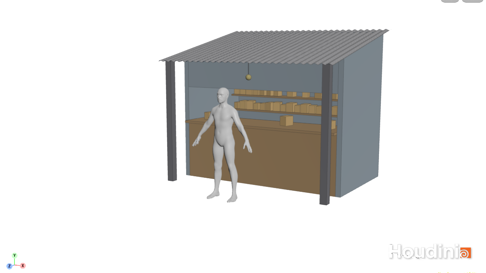
Tienda · baldas de cajas y latas
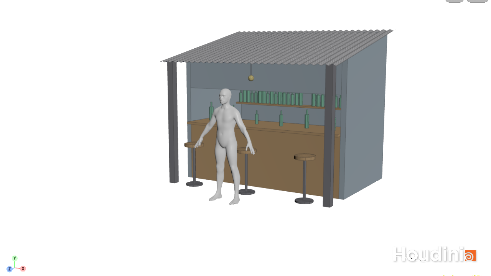
Bar · botellas y taburetes en la barra
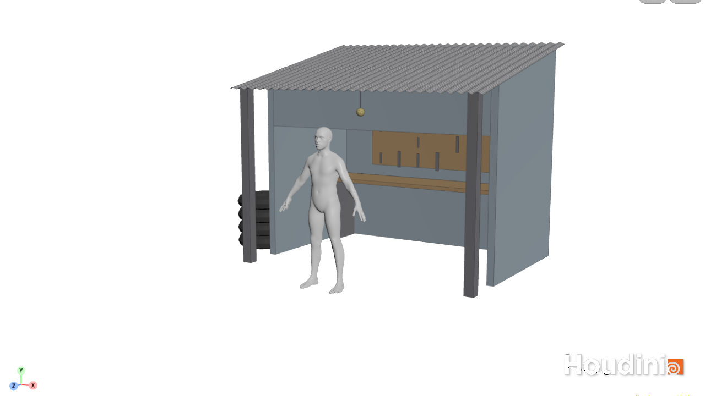
Taller · banco, panel de herramientas y neumáticos
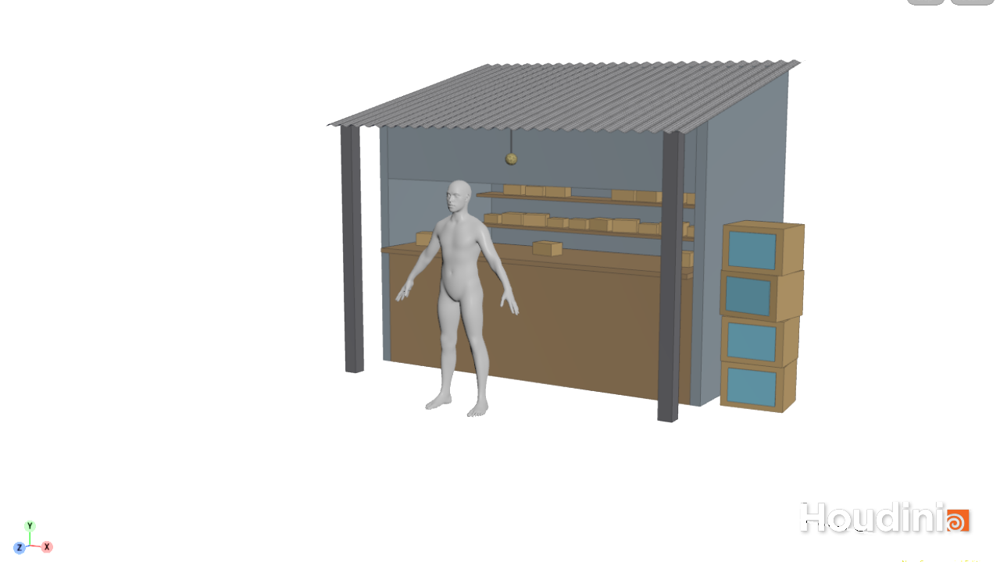
Electrónica · aparatos y una pila de televisores
La carcasa de chapa se llena según el oficio. Un menú elige el tipo de puesto y escribe solo el relleno: baldas con cajas, botellas o aparatos, género sobre el mostrador, taburetes, un banco con panel de herramientas, neumáticos o televisores apilados y una bombilla colgada bajo el volado. Las medidas de la carcasa no se tocan, así que cualquier puesto puede ser cualquier oficio. Además, el puesto publica sus puntos de anclaje: techo para paneles o parabólicas, fachada para el aire acondicionado y un punto de acceso a pie de calle.
Nota técnicaTodo el género sale de una sola nube de puntos: una fila por balda más otra sobre el mostrador. Un valor aleatorio por punto decide qué huecos quedan vacíos, otro el tamaño y otro un pequeño giro en planta, y Copy to Points coloca encima la pieza del género elegido. Con una semilla nueva la estantería se reordena sola, y como las baldas y el tejado derivan de las mismas medidas, el relleno sigue encajando aunque cambie la carcasa.
+18 sliders4 presets5 grupos de material nuevosde 622 a 1.978 polígonos
Fase 1b · bloque 120 oct 2026
El puesto de chapa: la carcasa
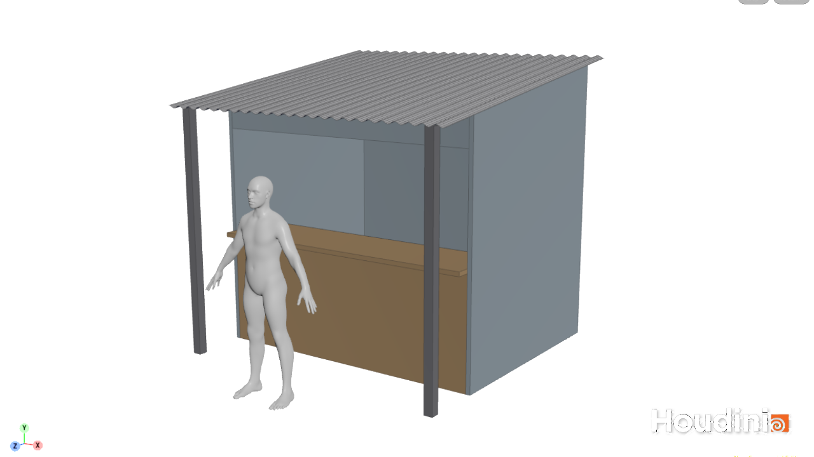
Carcasa con los valores por defecto, junto a la figura de 1,8 m
Empieza el resto del kit con los puestos de trabajo de la plaza. Todos comparten la misma carcasa: dos laterales de chapa, pared trasera, dintel, un mostrador de madera con tablero volado y un tejadillo de chapa ondulada que cae hacia la calle y se apoya en dos postes. Ancho, fondo, alturas, volados y la onda de la chapa son sliders. Los cuatro tipos de puesto (tienda, bar, taller y electrónica) se diferenciarán por lo que lleven dentro.
Nota técnicaToda la geometría cuelga de una sola regla: la línea del tejado, que va de la altura trasera a la delantera. Los laterales son un trapecio de cuatro puntos cuyas esquinas son expresiones, la chapa se inclina con el arcotangente de esa pendiente y los postes miden exactamente lo que marca la línea en su posición. Si se cambia cualquier altura o el fondo, todo vuelve a encajar sin huecos. La onda de la chapa es una sinusoide aplicada a una rejilla con ocho columnas por onda, con los valles apoyados en los muros.
+16 sliders444 puntos · 237 polígonos2,84 × 2,65 × 2,70 m
Fase 1a · bloque 9 · cierre20 oct 2026
El pool: 32 caravanas distintas listas para instanciar
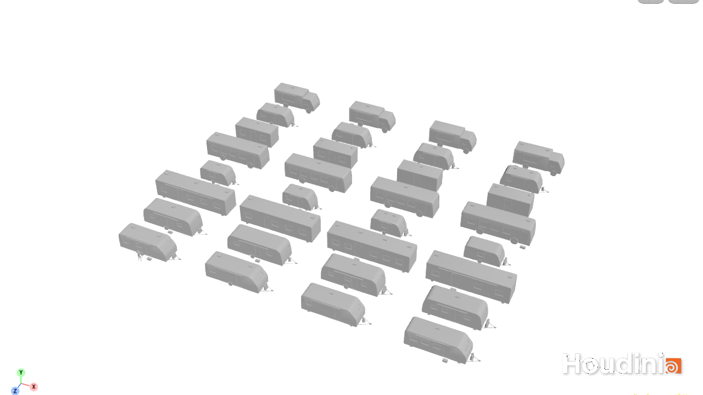
Hoja de contactos: una fila por tipo, cuatro subvariantes por fila
El generador se convierte en una biblioteca. Con un botón, recorre los ocho tipos y saca cuatro versiones de cada uno: la original y tres variaciones con más o menos largo, otras ventanas, ruedas o calzos, con o sin toldo o franja, distinto número de bombonas. Las 32 se guardan en disco empaquetadas por nombre, junto con sus puntos de anclaje y un índice con el tamaño real de cada una. Con esto queda cerrada la fase 1a.
Nota técnicaEl pool se hornea a disco en lugar de generarse en vivo dentro del parque. Así el parque nunca recalcula el generador: solo lee 32 piezas empaquetadas y las instancia, y 160 caravanas cuestan en memoria lo que 32. Las variaciones usan una semilla por tipo y subvariante, así que cada horneado da exactamente el mismo resultado.
32 subvarianteshorneado en 0,8 s722 KB en disco
Fase 1a · bloque 8b20 oct 2026
Accesorios: bombonas, toldo, luces y ribete
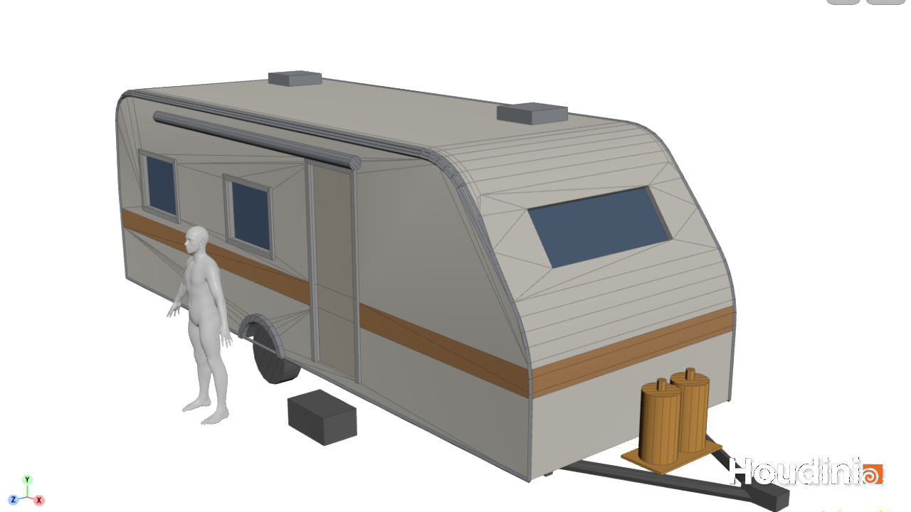
v0 · bombonas en la lanza, toldo enrollado y ribete
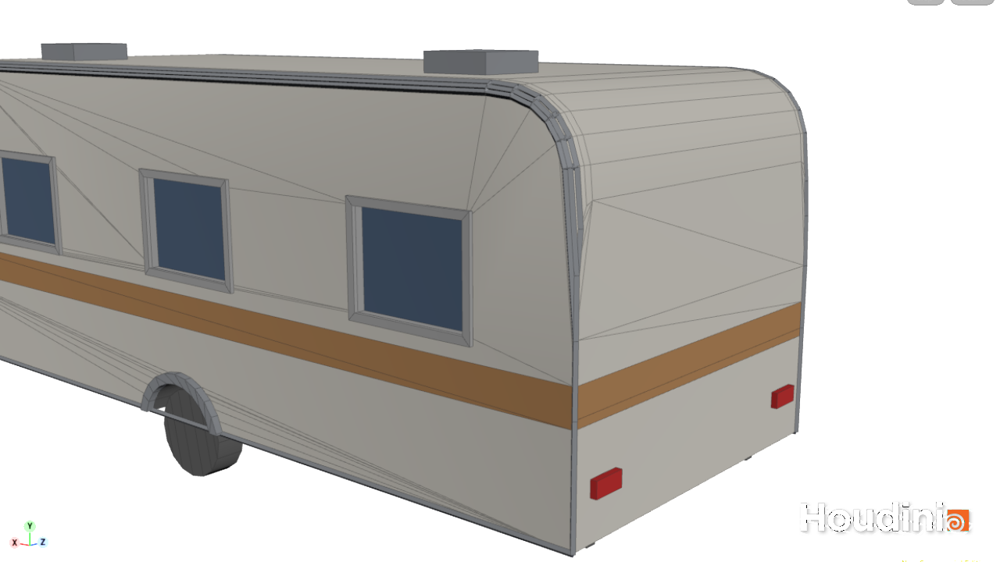
Trasera con pilotos y ribete de aluminio
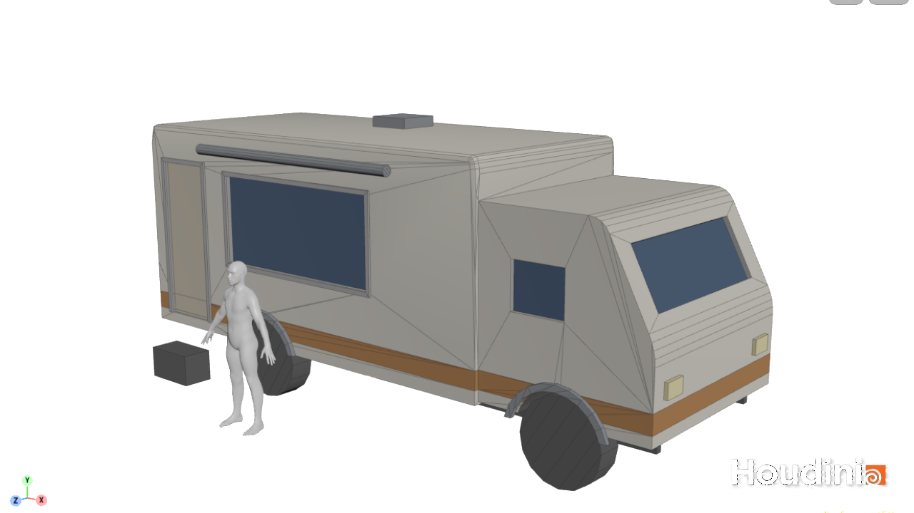
v7 · faros en la cabina y toldo sobre la ventana de servicio
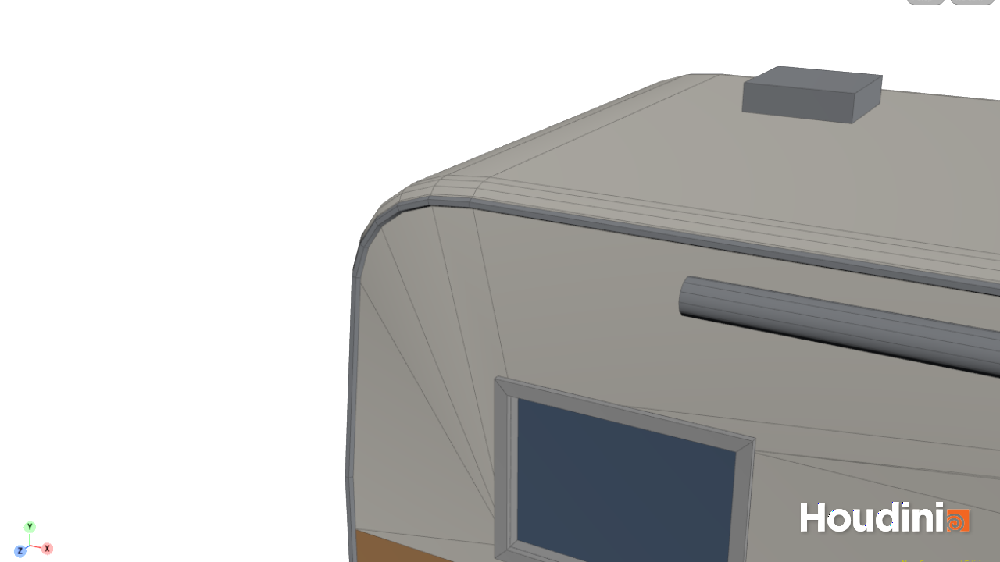
Ribete continuo (Sweep) en la esquina trasera
La segunda mitad del pase de detalle añade lo que hace que una caravana parezca vivida: bombonas de gas sobre la lanza, el toldo recogido encima de la puerta, pilotos traseros, faros en los que tienen motor y un ribete de aluminio que recorre el contorno de cada lateral. Cada tipo activa solo lo que le corresponde: la caseta de obra no tiene toldo ni pilotos, y el autobús no lleva bombonas.
Nota técnicaEl ribete no se dibuja a mano: se toma la cara lateral plana y se barre un tubo fino (Sweep) a lo largo de su borde, así que sigue la forma de cualquier tipo en una sola pieza continua. La primera versión, con PolyWire, se colaba por un detalle traicionero: las tiras del redondeo del techo heredaban el grupo del lateral y el ribete salía en 270 trozos. Seleccionar por la normal de la cara, y no por el grupo, lo resolvió y de paso redujo los polígonos casi a la mitad. El ribete inferior se interrumpe en los pasos de rueda.
+8 sliders3 grupos de material nuevos8 tipos sin errores
Fase 1a · bloque 8a20 oct 2026
Detalle medio: marcos, guardabarros y escalón
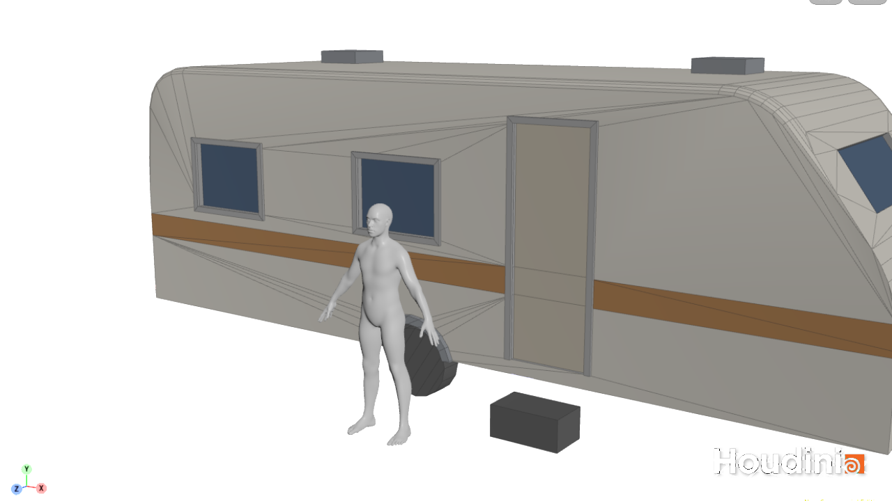
v0 · marcos que sobresalen y bloque de escalón
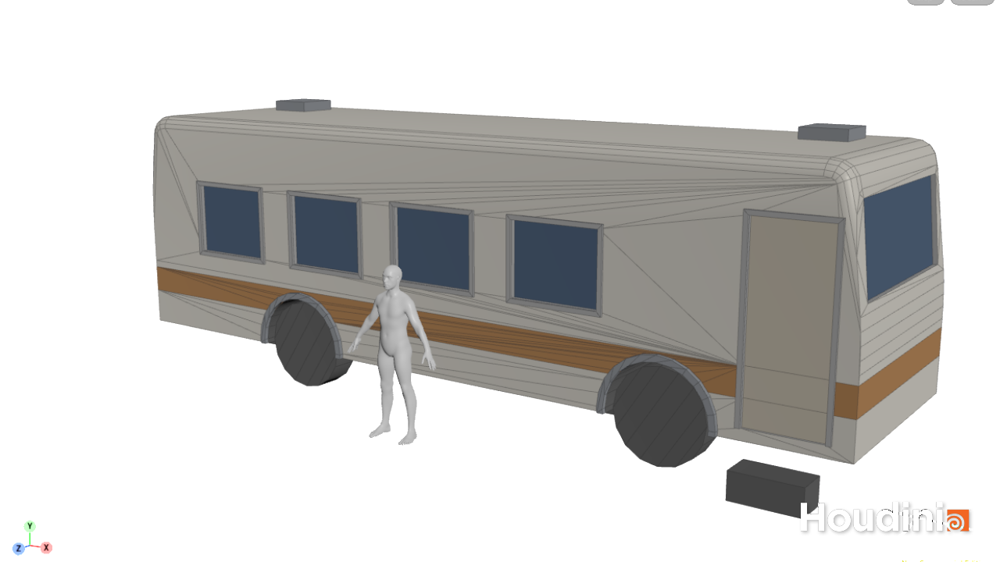
v4 · guardabarros en los dos ejes
Primer pase de detalle que cambia la silueta. Las ventanas y la puerta tienen un marco que sobresale de la pared, los pasos de rueda llevan guardabarros en arco y delante de la puerta hay un bloque de escalón apoyado en el suelo. Todo funciona en los ocho tipos sin tocarlos uno a uno.
Nota técnicaLos marcos reutilizan los mismos puntos que recortan las ventanas: cada punto lleva una normal hacia fuera y Copy to Points orienta el marco con ella. Basta con poner la normal en un lado, porque el Mirror la invierte al reflejar. Si mañana cambia el número de ventanas, marcos y huecos siguen alineados.
+6 sliders0 caras no planasv0: 600 polígonos
Fase 1a · limpieza20 oct 2026
Superficies que parecían dobladas
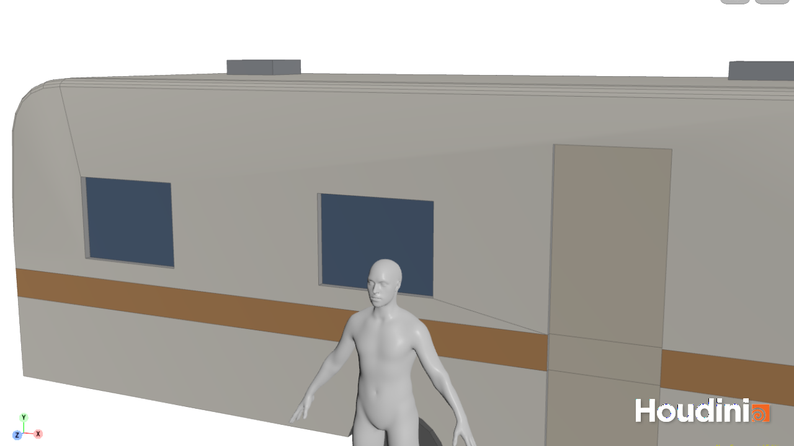
Antes: el lateral plano se sombrea con degradados
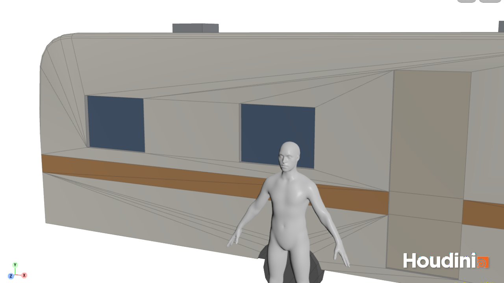
Después: sombreado plano y uniforme (las líneas son solo aristas)
Los recortes con Booleans dejaban los laterales como caras gigantes de hasta 73 vértices, sin normales y con alguna cara que no era plana del todo. El viewport las suavizaba con sus vecinas y parecían dobladas. Ahora, al final del generador, cada cara se divide en polígonos de cuatro lados como máximo y se le calculan normales con un ángulo de corte.
Nota técnicaNormales por vértice con ángulo de corte de 30°: si dos caras forman más de 30°, la arista se ve viva; si forman menos, se suaviza. Las paredes salen planas y los biseles redondos. Es la configuración estándar en hard-surface, y como va al final de la red, todo lo que se añada después hereda el arreglo sin tocar nada más.
0 caras no planasmáx. 4 vértices por cara+130 polígonos en la v0
Fase 1a · bloque 720 oct 2026
Techos redondeados: la Airstream por fin parece una Airstream
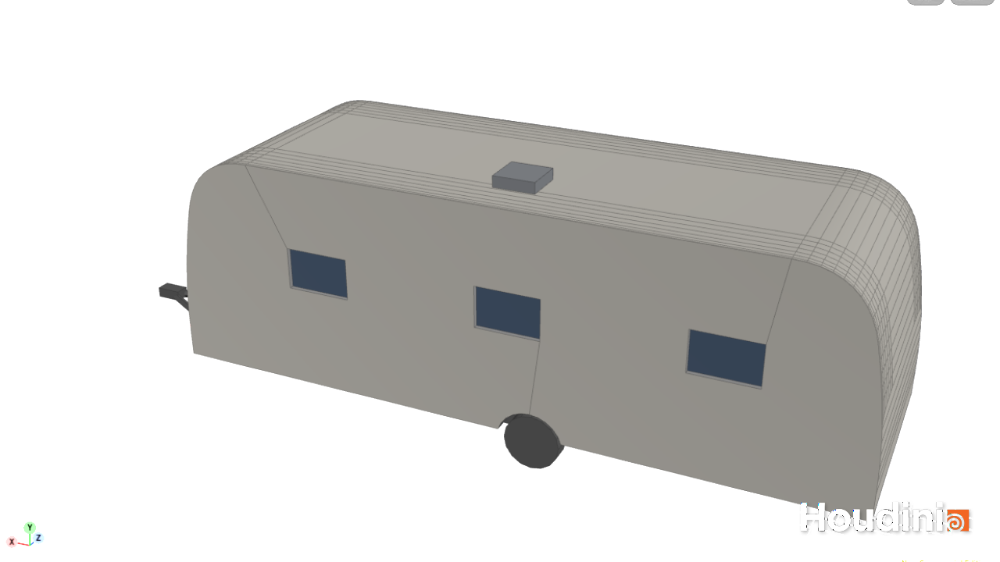
Vista trasera alta: aristas del techo y trasera redondeadas
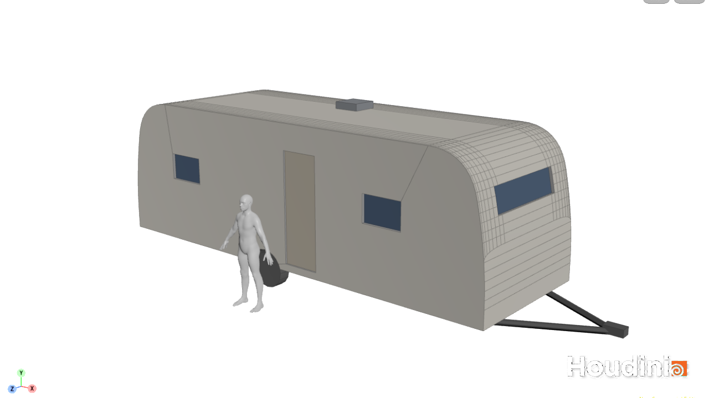
Lado de la puertaCanned ham con un redondeo más sutil
Extruir un perfil lateral da cajas con las aristas largas vivas. Ahora el contorno alto de los laterales se redondea con un radio y una altura de inicio propios de cada tipo: casi todo en la Airstream, un toque suave en el autobús o el furgón, y nada en la caseta de obra, que debe verse recta.
Nota técnicaLo difícil fue elegir solo esas aristas. La solución: convertir cada lateral (una sola cara) en un grupo de aristas con Group Promote quedándose solo con su borde, y cruzarlo con una caja que empieza a la altura deseada. Dos intentos más simples fallaron (seleccionar por ángulo y promover dos grupos a la vez), y quedan anotados en el diario técnico para no repetirlos.
+3 sliders8 tipos sin erroresAirstream: 673 polígonos
Fase 1a · bloque 6b20 oct 2026
Una cabina de conductor para el food truck
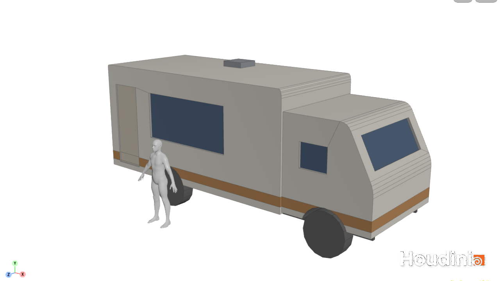
v7 · lado de la puerta, con la ventana de servicio
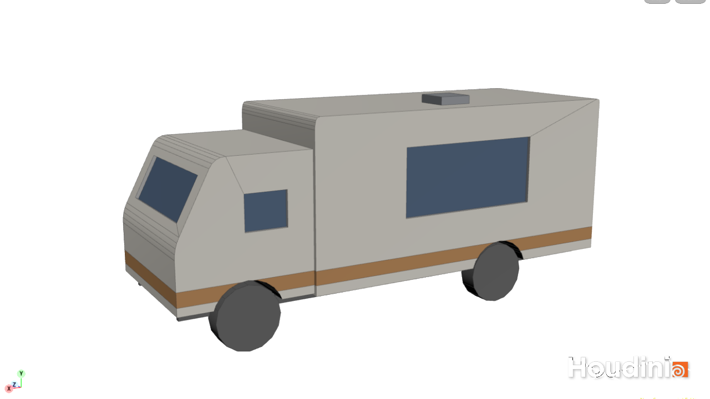
Lado opuesto: cabina con parabrisas y ventanilla
El octavo tipo completa el catálogo: un furgón de reparto convertido en food truck, con una gran ventana de servicio, una cabina de conductor delante y dos ejes. La cabina es una pieza más del generador, así que cualquier otro tipo puede llevarla con un clic.
Nota técnicaLa cabina tiene su propio perfil lateral (capó y parabrisas inclinado) y se funde con la caja mediante un Boolean de unión. Para que la unión sea limpia, la cabina entra 5 cm en la caja, es 6 cm más estrecha y arranca 3 cm más arriba: así nunca hay dos caras exactamente en el mismo plano, que es el caso que más rompe un Boolean.
+11 sliders8 presets6,9 m con cabina
Fase 1a · bloque 6a20 oct 2026
Más tipos: caseta de obra, canned ham y autobús de dos ejes
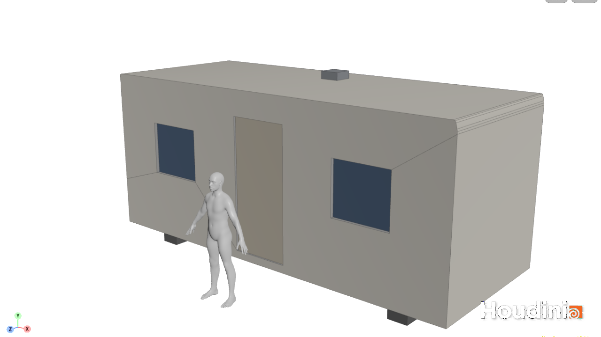
v5 · caseta de obra
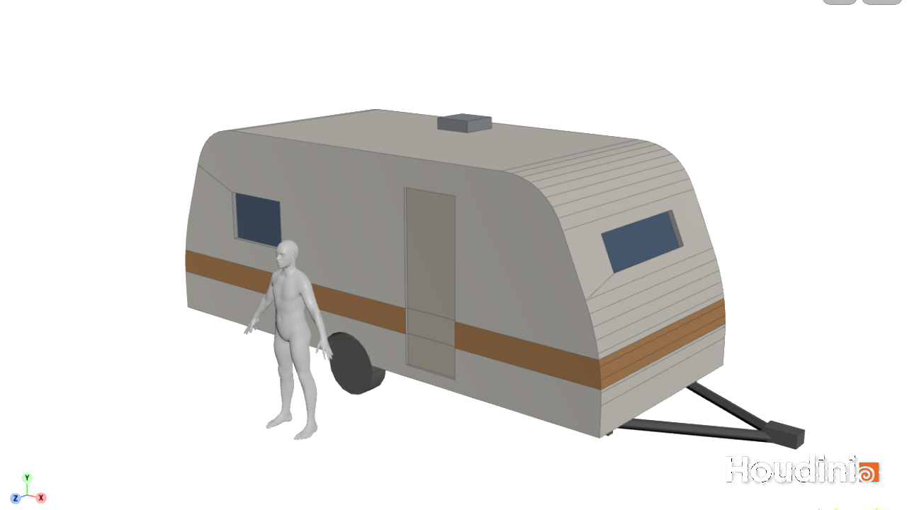
v6 · canned ham, inclinada delante y detrás
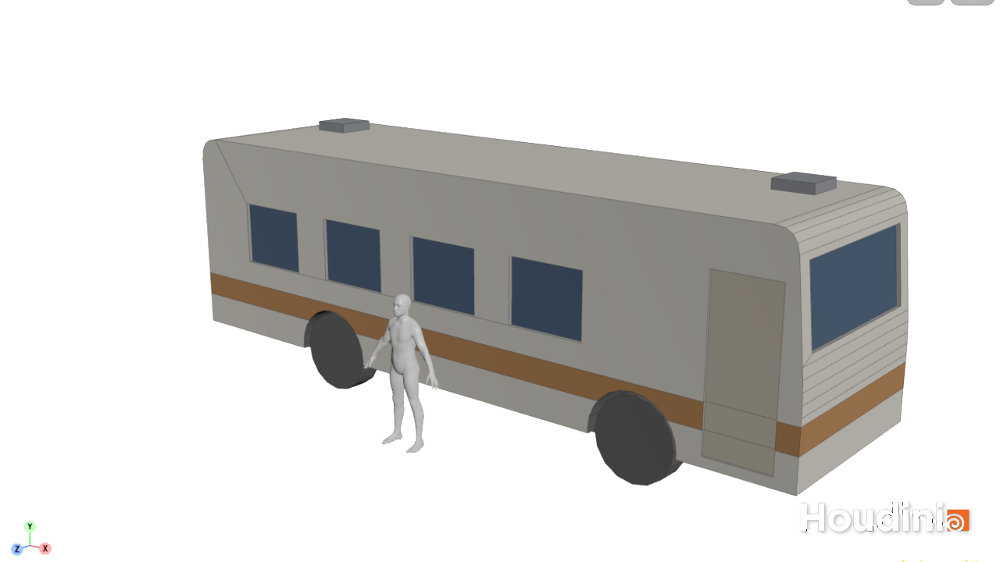
v4 · el autobús ya tiene eje delantero
El catálogo crece a siete tipos. Dos piezas nuevas en el generador lo hacen posible: una trasera que también puede inclinarse y redondearse (con ella la Airstream pasa a ser simétrica) y un segundo eje opcional con su propio paso de rueda. El octavo tipo, un furgón con cabina de conductor, llega en el próximo bloque.
Nota técnicaEl perfil pasó de 5 a 6 puntos. Cuando la trasera es recta, el punto nuevo queda en línea con sus vecinos y una expresión lo saca del grupo de bisel, así que los tipos que ya existían salen idénticos, comprobado con su bounding box. Añadir capacidad sin cambiar lo que ya funciona es la regla para que el pool no se rompa a mitad de proyecto.
+4 sliders7 presetsde 4,5 a 11 m
Fase 1a · bloque 520 oct 2026
Un generador, cinco caravanas
v1 · aluminio redondeada (Airstream)
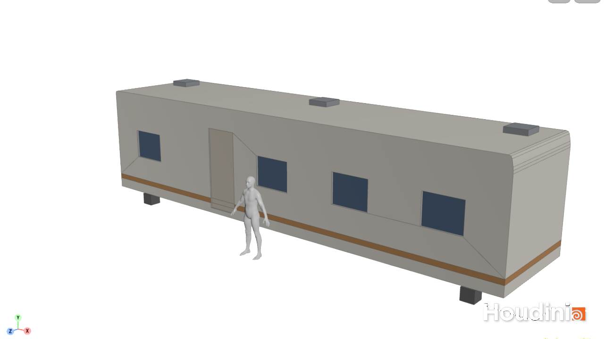
v2 · mobile home sobre calzos
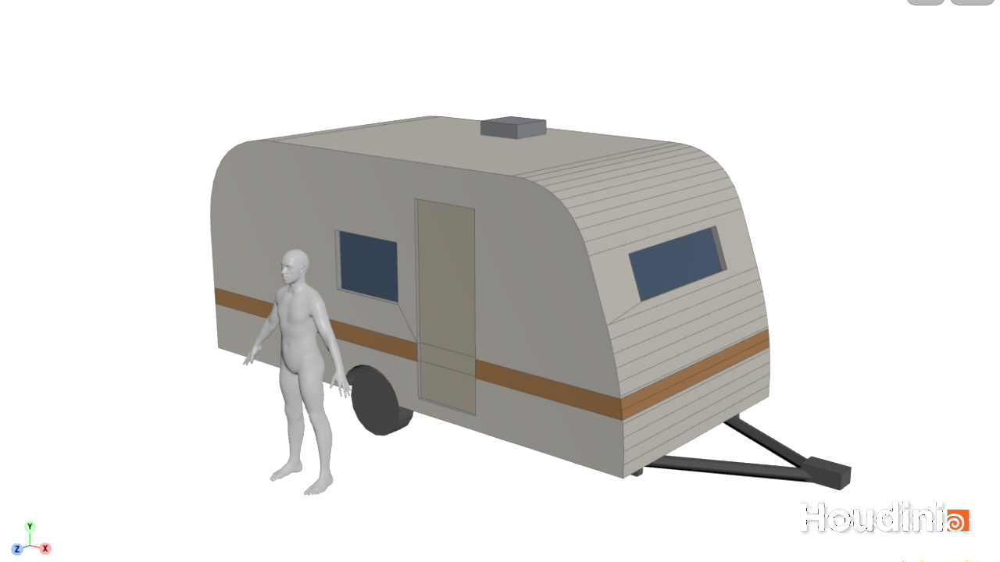
v3 · cápsula pequeñav4 · autobús reconvertido
Los cinco tipos de caravana salen del mismo generador. Un menú "Tipo" carga un preset de unos 30 valores (perfil, chasis, ventanas, puerta, franja, techo) y después cada slider se puede seguir retocando a mano. El mobile home pierde la lanza y las ruedas, y el autobús cambia el frontal inclinado por un parabrisas casi vertical.
Nota técnicaUn solo generador en vez de cinco redes: cualquier mejora (un marco de ventana, un remache) llega a todos los tipos a la vez. Además, los radios de las esquinas se limitan solos con min() según la longitud de cada tramo del perfil, así que ningún valor, ni a mano ni aleatorio, puede cruzar el bisel. Es lo que permitirá aleatorizar el pool sin romper geometría.
+2 sliders5 presetsde 4,5 a 11 m de largo
Fase 1a · bloque 420 oct 2026
Franja, ventana frontal, claraboyas y anclajes
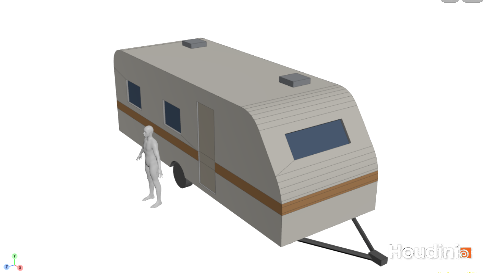
Lado de la puerta, con colores de previsualización por grupo
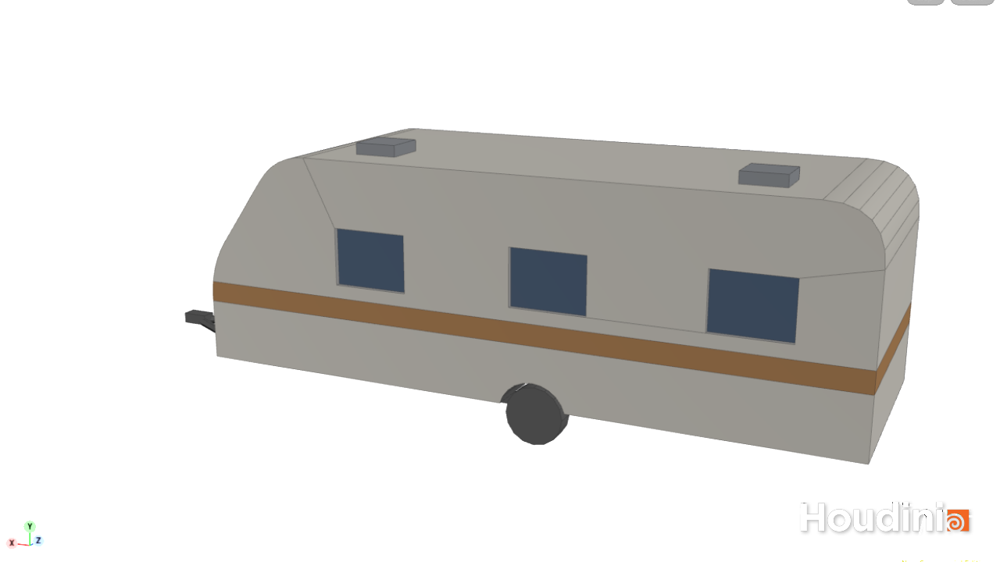
Lado opuesto: tres ventanas y paso de rueda
La caravana clásica ya se lee como la del concept: carrocería clara con una franja que la rodea, ventana en el frontal inclinado y claraboyas en el techo. Además publica puntos de anclaje (techo, fachada y puerta) con su normal, donde más adelante se montarán paneles solares, aires acondicionados y escaleras.
Nota técnicaLa franja no es una pieza pegada: un Boolean en modo Shatter, con la carrocería tratada como superficie, parte las caras por donde pasa una losa invisible y las mete en un grupo propio. La ventana frontal usa una caja girada con atan(retranqueo / altura), así que sigue al plano inclinado aunque cambie el perfil.
+9 sliders294 puntos · 176 polígonos6 anclajes
Fase 1a · bloque 320 oct 2026
Ventanas, puerta y paso de rueda
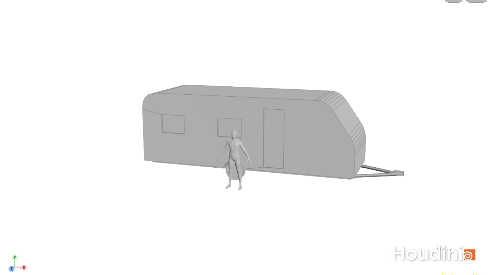
Las ventanas que chocarían con la puerta desaparecen solas
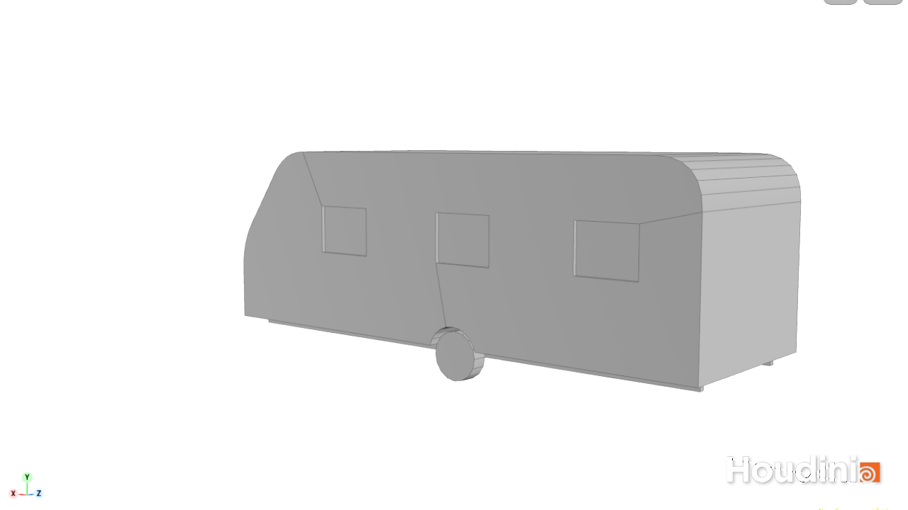
Paso de rueda recortado alrededor de la rueda
Ventanas, puerta y paso de rueda se recortan con Booleans y salen ya clasificados en grupos de material: glass, frame, door, wheelwell. Las ventanas se distribuyen a lo largo del lateral y se eliminan las que invadirían la puerta.
Nota técnicaLas aberturas son rebajes de 5 cm, no agujeros: la caja sigue cerrada y no hace falta modelar interiores para 160 caravanas. El fondo del rebaje (normal hacia fuera) se convierte en cristal y sus paredes en marco, simplemente comparando normales.
+11 sliders238 puntos · 144 polígonos
Fase 1a · bloque 220 oct 2026
Chasis: ruedas o calzos
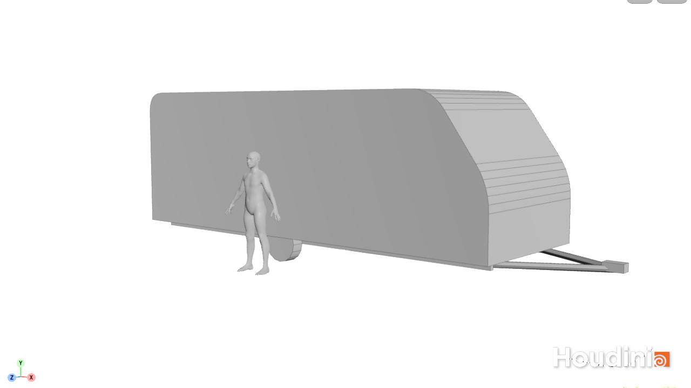
Con ruedas, para las caravanas a pie de calle
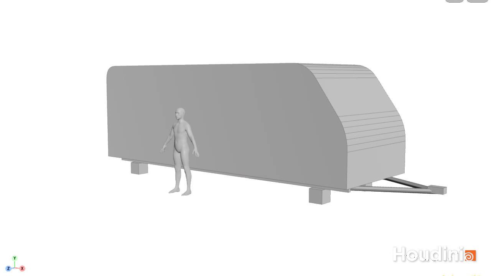
Sobre calzos, para las que ya no se mueven
Largueros, lanza en V con enganche, y un interruptor que cambia las ruedas por cuatro calzos. Es la primera variación procedural real: en el pool, unas caravanas conservarán las ruedas y otras no, sin duplicar redes.
Nota técnicaLas piezas simétricas se modelan una vez y se reflejan con mirror: un solo slider mueve los dos lados. El cambio ruedas/calzos es un switch cuyo índice lee un parámetro, el patrón base de cualquier variante procedural.
+8 sliders168 puntos · 103 polígonos
Fase 1a · bloque 120 oct 2026
La silueta: dibujar el perfil y extruirlo
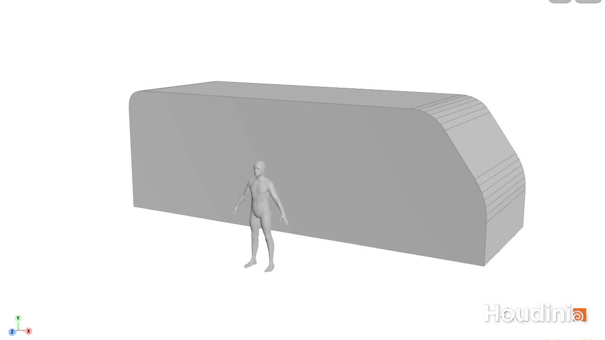
Primera silueta junto a la figura de referencia de 1,8 m
La caravana nace como un perfil lateral de cinco puntos cuyas posiciones son expresiones conectadas a los sliders (largo, alto, inclinación y radio del frontal). Se redondean las esquinas y se extruye al ancho.
Nota técnicaSe modela desde la silueta y no desde una caja, porque la silueta es lo que distingue un tipo de caravana de otro. Con los mismos sliders salen formas de travel trailer, de mobile home o casi de autobús.
8 sliders7,0 × 2,7 × 2,4 m
Fase 020 oct 2026
La red del pueblo, antes de que exista el pueblo
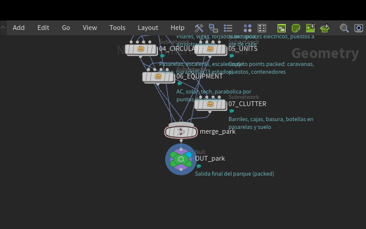
Las 8 etapas del generador, cableadas y vacías
Antes de modelar nada, se montó el esqueleto del sistema: una biblioteca de assets y un generador en 8 etapas (layout, apilado, estructura, circulación, unidades, equipamiento, clutter y suelo), cada una con su salida estable.
Nota técnicaTodo el parque será primero una nube de puntos con atributos (qué es cada cosa, dónde va, cómo está girada). La geometría real solo aparece al final, como instancias. Por eso cada pieza llevará además en qué etapa nace y en qué orden aparece: material para el visualizador final.
Planificación20 oct 2026
Decisiones de diseño
Un cuestionario de 15 preguntas fijó el rumbo: unas 160 unidades en clusters alrededor de una plaza, alturas aleatorias de hasta 8 pisos, mucho caos en el apilado (8/10) y accesos reales a cada caravana, comprobados con un grafo. La estructura mezcla vigas IPE abajo y tubo de andamio arriba. Todo se modela proceduralmente en Houdini, con color y óxido por instancia, y la cinemática final será un vuelo de dron renderizado en Karma.